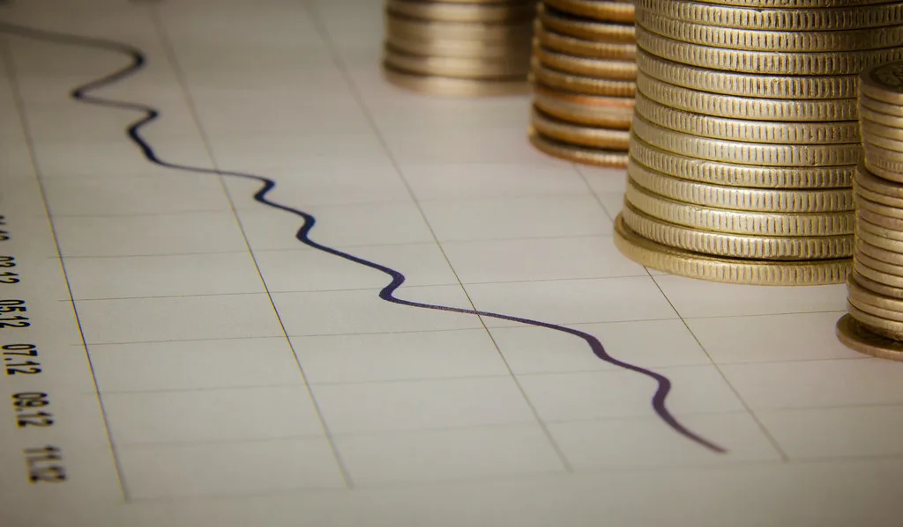
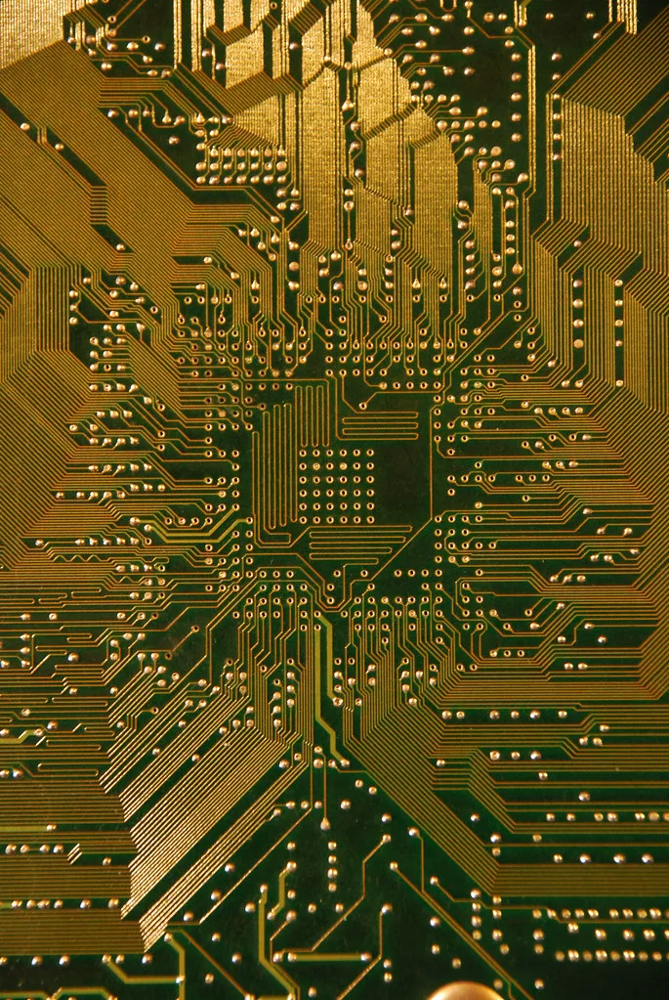

코스피, 코어위브 회사채 경고음에 약보합 출발…AI 버블 공포 여진
20일 코스피가 전 거래일보다 34.44포인트(0.60%) 내린 5733.57에 약보합 출발했다. 같은 시각 코스닥도 전장보다 0.44% 밀린 805.37로 장을 열었다. 전날 3%대 급락을 겪은 데 이어 이틀째 하락 출발하면서, 모처럼 되찾았던 투자 심리 안정감이 다시 흔들리는 모양새다. 시장에서는 이번 하락의 배경으로 미국 인공지능(AI) 클라우드 업체 코어위브를 둘러싼 회사채 시장의 경고음을 꼽는다.
코어위브의 회사채는 최근 '디스트레스(부실 위험)' 영역까지 밀려난 것으로 평가된다. 회사채 가격은 지난 6월 말보다 약 20% 떨어졌고, 유통수익률은 15% 안팎까지 치솟았다. 금융시장은 이 회사가 앞으로 5년 안에 채무를 갚지 못할 가능성을 60%가량 반영하기 시작한 것으로 전해진다. 코어위브는 엔비디아 그래픽처리장치(GPU)를 대량으로 사들여 AI 개발 기업에 빌려주는 이른바 '네오클라우드' 사업을 벌여왔는데, 이 과정에서 회사채 발행과 차입 등 부채 조달에 크게 의존해온 것으로 알려졌다. 현재 부채 규모는 500억달러, 우리 돈으로 약 70조원에 이른다.

코어위브를 바라보는 월가의 시각은 엇갈린다. JP모간체이스 애널리스트들은 이 회사의 자금 수요가 사업 부진이 아니라 지나치게 빠른 사업 확장 속도에서 비롯된 것이라며, 부채에 대한 우려가 과도하다고 진단했다. 반면 골드만삭스는 최근 투자의견을 기존 '중립'에서 '매수'로 상향 조정해 상반된 평가를 내놨다. 이처럼 평가가 갈리면서 투자자들 사이에서는 혼란이 가중되고 있다.
여기에 유럽 국채금리 급등과 중동 지역의 지정학적 긴장에 따른 국제유가 불안까지 겹치면서 글로벌 투자심리를 전반적으로 압박하고 있다는 분석도 나온다. 국내 증시는 수출의 상당 부분을 반도체에 의존하는 구조여서, 미국發 AI 인프라 투자 우려에 특히 취약하다는 평가를 받는다. 삼성전자와 SK하이닉스 등 대형 반도체주가 이날도 약세로 출발하며 지수 하락을 이끌었다.
투자자들의 불안을 자극하는 또 다른 요인으로는 코어위브 경영진의 주식 매도 사실이 꼽힌다. 회사가 데이터센터 확장을 위해 회사채 발행과 차입을 늘려가는 동안 일부 창업자와 경영진이 보유 지분을 처분한 사실이 뒤늦게 알려지면서, 정작 내부에서는 'AI 붐'의 지속 가능성을 낙관하지 않는 것 아니냐는 의구심이 번졌다. 이는 올해 들어 전 세계 증시를 끌어올린 AI 투자 열풍 전반에 대한 재평가 요구로 확산하는 분위기다. 빅테크 기업들의 데이터센터 투자가 차입에 과도하게 의존하고 있다는 지적은 올 하반기 내내 간헐적으로 불거졌던 우려이기도 하다.

코스피는 앞서 19일 전 거래일보다 3%대 급락하며 가까스로 회복했던 상승분을 대부분 되돌린 바 있다. 이틀 연속 하락 출발이 이어지면서 시장에서는 AI 인프라 기업들의 부채 의존도와 수익성에 대한 의문이 쉽게 해소되지 않을 것이라는 우려가 커지고 있다. 개인 투자자들 사이에서도 추가 하락에 대한 경계심이 확산하는 분위기다.
증권가에서는 이번 흐름이 AI 산업의 성장 가능성 자체를 의심하는 것이라기보다, 그간 급등한 주가와 부채에 대한 재평가 성격이 강하다는 시각도 공존한다. 다만 코어위브를 둘러싼 신용 경고음이 단기간에 가라앉기는 어려운 만큼, 이번 주 예정된 미국 반도체 기업들의 실적 발표와 국채금리 흐름이 향후 지수 방향을 가를 변수로 지목된다.